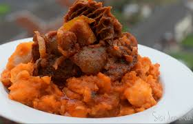

Odin Resturant
home
about us
recipe
chef academy
contact us
odin recipe chew
helping you cook a variety of dishes from all over the world

African delicacies
Jollof Rice (Nigeria/Ghana): A flavorful rice dish cooked with tomatoes, spices, and often meat or seafood
Egusi Soup (Nigeria): A rich soup made from melon seeds, leafy vegetables, and meat or fish.
Waakye (Ghana): A rice and beans dish, often served with spicy sauces, boiled eggs, and fried plantains.